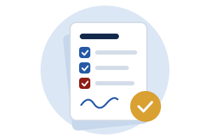

คู่มือผู้นิเทศงานและที่ปรึกษาร่วม
ขั้นตอนรับรอง logbook รายสัปดาห์ แบบประเมินที่ท่านจะได้รับ และสิ่งที่ควรทำเมื่อพบปัญหาระหว่างการฝึก

รับรอง logbook ทุกวันศุกร์
เปิดอีเมลจากระบบ SE-WIL
ทุกบ่ายวันศุกร์ ประมาณ 15:00–16:00 น. ระบบส่งสรุปรายการ logbook ของนักศึกษาที่ท่านดูแล
กดลิงก์เฉพาะท่าน
ลิงก์นี้ใช้ได้ตลอดภาคโดยไม่ต้องเข้าระบบ โปรดอย่าส่งต่อให้ผู้อื่น
ตรวจรายการ
- เวลาตรงกับที่นักศึกษาทำงานจริง
- แท็กวิชาถูกต้อง: งานตามตำแหน่งเป็น 305 งานโครงงานเป็น 304
- รายละเอียดบอกได้ว่าทำอะไรและได้ผลอะไร
รับรอง หรือส่งกลับพร้อมเหตุผล
รายการที่ส่งกลับ นักศึกษาจะแก้และส่งให้ท่านอีกครั้งในรอบถัดไป ชั่วโมงนับเฉพาะรายการที่ท่านรับรองแล้ว
ช่วงวันหยุดปีใหม่ ถ้าบริษัทหยุด ท่านรับรองรายการเมื่อกลับมาทำงานได้ วันที่นักศึกษาไม่ได้ทำงานไม่ต้องมีรายการ
ข้อมูลติดต่อและ CV ของนักศึกษา
ติดต่อหลักสูตรได้ที่ผู้ประสานงาน SE-WIL เป็นอันดับแรก (ดูกล่อง "ติดต่อหลักสูตร") หรือตอบกลับอีเมลจากระบบ ซึ่งส่งถึงผู้ประสานงานโดยตรง
หน้าลิงก์เฉพาะท่านมีการ์ด "ติดต่อหลักสูตร" ที่แสดงผู้ประสานงาน SE-WIL และหัวหน้าหลักสูตร (กรณีจำเป็น) และแสดงข้อมูลติดต่อของนักศึกษากับอาจารย์นิเทศเฉพาะรายที่ท่านดูแล เบอร์โทรแสดงเฉพาะคนที่ยินยอมให้ไว้ และมีปุ่มเปิด CV ถ้านักศึกษาแนบ ข้อมูลเหล่านี้ใช้เพื่อการฝึกเท่านั้น โปรดอย่าส่งต่อ
เบอร์โทรของท่านไม่บังคับ ถ้าต้องการให้ติดต่อทางอีเมลอย่างเดียว หรือต้องการแก้หรือลบเบอร์ ตอบกลับอีเมลจากระบบได้ อ่านการคุ้มครองข้อมูลส่วนบุคคล
แบบประเมินสมรรถนะ (SE-WIL08)
ท่านจะได้รับลิงก์แบบประเมินสองครั้ง ครั้งแรกในสัปดาห์ที่ 8 เป็นการประเมินเชิงพัฒนา (10%) เพื่อให้นักศึกษารู้ว่าควรปรับอะไร ครั้งที่สองในสัปดาห์ที่ 14 (30%) แบบประเมินวัดสมรรถนะการทำงานในตำแหน่ง ความรับผิดชอบ และการทำงานร่วมกับผู้อื่น และไม่มีข้อเกี่ยวกับคุณภาพโครงงาน เพราะส่วนนั้นประเมินใน ENGSE304
| แบบประเมิน | ผู้ประเมิน | สัปดาห์ | น้ำหนัก |
|---|---|---|---|
| SE-WIL08 สมรรถนะกลางภาค | ผู้นิเทศงาน | 8 | 10% ของ ENGSE305 |
| SE-WIL08 สมรรถนะปลายภาค | ผู้นิเทศงาน | 14 | 30% ของ ENGSE305 |
| SE-WIL09 คุณค่าผลงาน | ที่ปรึกษาร่วม | 14 | 20% ของ ENGSE304 |
| SE-WIL11 อนุญาตเผยแพร่ | ที่ปรึกษาร่วม | 13–15 | เงื่อนไขก่อนสอบ |
ถ้าแบบประเมินส่งไม่ทันกำหนด นักศึกษาจะได้ระดับคะแนน I ไว้ก่อน จนกว่าหลักสูตรจะได้รับแบบประเมินของท่าน
สำหรับที่ปรึกษาร่วม
- สัปดาห์ที่ 0–3 เสนอโจทย์ 1–2 หัวข้อ ร่างข้อความปัญหากับนักศึกษา และรับรองโจทย์ในข้อเสนอโครงงาน
- ระหว่างภาค ร่วมทบทวนงานตามที่สะดวก ไม่มีคะแนนจากท่านในช่วงนี้
- สัปดาห์ที่ 13–15 ตรวจเนื้อหาลับในร่างรายงาน และลงนามอนุญาตเผยแพร่
- สัปดาห์ที่ 14 ดูการสาธิตและประเมินว่าผลงานมีคุณค่าต่อสถานประกอบการเพียงใด รวมถึงระดับการนำไปใช้จริง
- สัปดาห์ที่ 15 ร่วมเป็นกรรมการสอบปากเปล่า ออนไลน์ได้
เมื่อเกิดปัญหา
- นักศึกษาขาดงานหรือมีปัญหาพฤติกรรม แจ้งผู้ประสานงาน SE-WIL หรืออาจารย์นิเทศได้ทันที ไม่ต้องรอวันนิเทศ
- นักศึกษาขอลา การลาต้องได้รับอนุมัติจากทั้งท่านและอาจารย์ วันลาไม่นับเป็นชั่วโมงฝึก
- ต้องการยุติการฝึก หลักสูตรใช้คำร้อง SE-WIL02 และสอบข้อเท็จจริงร่วมกับท่านก่อนตัดสิน
- บริษัทไม่สามารถรับนักศึกษาต่อได้ ชั่วโมงที่ท่านรับรองแล้วนับต่อได้ที่สถานประกอบการแห่งใหม่
- ต้องการเปลี่ยนผู้นิเทศงาน แจ้งผู้ประสานงาน SE-WIL เพื่อออกลิงก์ให้ผู้นิเทศงานคนใหม่